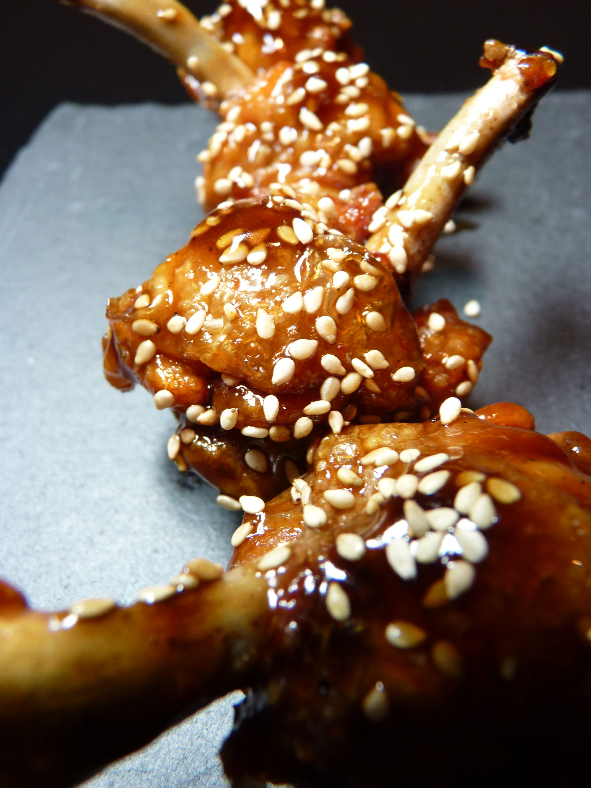

Sesame Chicken Lollipops

Sesame Chicken Lollipops
Marinade
Toasted Sesame Oil
Poultry Rub
Teriyaki Sauce
Minced Garlic
Lemon Juice
Directions to French Chicken Drumstick
Cut circle about 1-2" from the end of the bone through the cartilage.
Paper towel the meat and skin to expose the bone.
Cut cartilage at the meaty end of the drumstick at an angle.
Cut tendons exposed from frenching.
Form a rough ball with the meat, then pull skin back down.
Cooking Directions
375 deg F for 30-40 minutes.
Dunk into sauce.
Finish for 10 minutes, then sprinkle sesame seeds.
Home